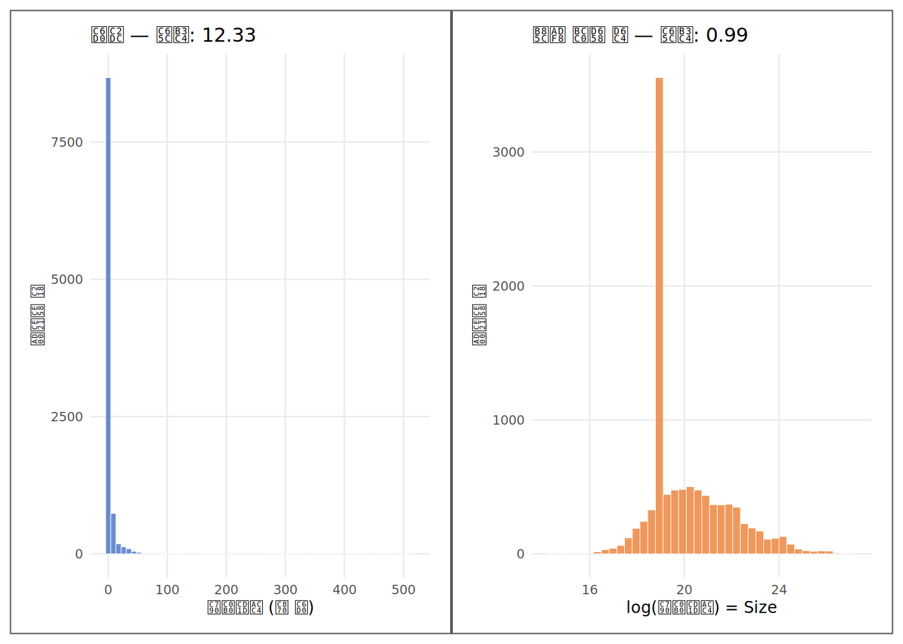
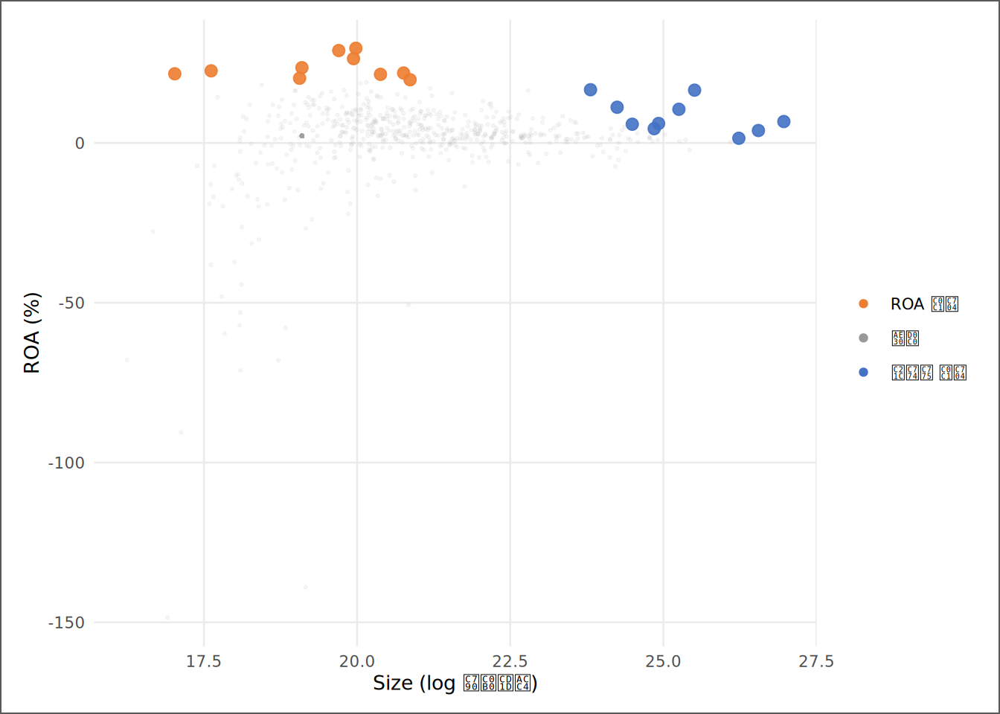

# | 키워드 | 한 줄 핵심 |
|---|---|---|
1 | 파생변수 (Feature Engineering) | 원시값을 분석 목적에 맞는 형태로 변환한 새 변수 — 변환 규칙이 '레시피'다 |
2 | 로그 변환 (Log Transformation) | 극단적 우왜도를 압축해 대형사·소형사를 같은 축에 올린다 — 계수 해석 단위는 'e배 증가' |
3 | 비율 변수 (Ratio Variable) | 공통 분모로 나누어 규모 효과를 제거한다 — ROA·ATO·부채비율이 모두 이 원리 |
4 | 더미 변수 (Dummy Variable) | 범주를 0/1로 수치화한다 — 질적 단절을 포착하되 분류 내부 분산을 버린다 |
5 | 표준화 (Standardization / Z-score) | 평균을 빼고 표준편차로 나눠 단위를 통일한다 — 계수 크기 비교가 목적 |
6 | 변수 정의서 (Variable Dictionary) | 변수 이름·산식·단위·해석·한계를 기록한 레시피 — 재현성과 팀 소통의 기반 |
7 | 규모 효과 (Scale Effect) | 기업 크기 차이가 원시값에 포함된 현상 — 제거하지 않으면 대형사가 분석을 지배한다 |
파생변수 — 재료를 요리 가능한 형태로
사례로 시작하기
KG Asset 분석팀의 신입 분석가 김자산은 팀장의 지시를 받았다. “삼성전자, 한화솔루션, 에이치엘비 세 기업의 수익성을 비교해서 보고해라.” 김자산은 DataGuide에서 당기순이익 데이터를 내려받았다. 삼성전자는 30조 원, 한화솔루션은 3천억 원, 에이치엘비는 −200억 원이었다.
첫 번째 초안에 이 숫자를 그대로 표에 넣었다. 팀장이 보고서를 보고 물었다. “삼성전자가 1등이라고 했는데, 수익성이 좋아서인가, 아니면 그냥 크기 때문인가?”
김자산은 멈칫했다. 삼성전자의 자산은 500조 원, 한화솔루션은 15조 원, 에이치엘비는 1조 원이다. 30조 원의 이익과 3천억 원의 이익을 같은 축에 올리는 것은 대형 조리실 전체의 산출량과 1인 레스토랑의 산출량을 비교하는 것과 같다. 비교가 아니라 규모 자랑이다.
팀장이 이어서 말했다. “ROA로 바꿔서 다시 해봐.” 자산총계로 나누는 것, 즉 1인분으로 환산하는 것이 첫 번째 변환이었다. 두 번째 문제는 데이터를 히스토그램으로 그리면서 드러났다. 자산총계를 분포로 그리자 소형사들은 0에 붙어 거의 보이지 않고, 대형사 몇 곳이 오른쪽으로 꼬리를 길게 늘어뜨렸다. 팀장이 다시 말했다. “자산총계는 로그를 취해라.” 불 조절이 두 번째 변환이었다.
이 장의 파생변수들 — Size, ROA, ATO, 부채비율, Loss_Dummy, ROA_Z — 은 3장 SSOT 파이프라인에 이미 저장되어 있다. 이 장에서는 그 변수들을 원시값에서 직접 재파생하고, 레시피(변수 정의서)를 문서화하며, SSOT 저장값과 교차 검증한다. 4장에서 Winsorize를 적용한 부채비율_Win이 왜 필요했는지도 이 과정에서 명확해진다.
핵심 키워드
학습 목표
이 장을 마치면 다음 여섯 가지를 할 수 있다.
- 파생변수가 필요한 두 가지 이유(비교가능성, 분포 안정성)를 원시 데이터의 특성과 연결해 설명할 수 있다.
log()변환의 직관을 설명하고, 회귀계수를 “자산이 e배 증가할 때”로 정확하게 번역할 수 있다.- ROA·ATO·부채비율·Loss_Dummy·ROA_Z를 R로 직접 파생하고, 분모가 0 이하인 관측치를 방어하는 코드를 작성할 수 있다.
- 더미화가 버리는 정보(분류 내부 분산)를 설명하고, 그 비용이 수용 가능한 경우와 그렇지 않은 경우를 구분할 수 있다.
- 파생변수 정의서(이름·산식·단위·해석·한계 5개 항목)를 완성하고 SSOT 저장값과 교차 검증할 수 있다.
- 이 장에서 만든 변수가 6~10장 분석의 재료가 되는 흐름을 한 문장으로 설명할 수 있다.
D→I→K→W 4단계 파이프라인
| 단계 | 이 장에서의 모습 |
|---|---|
| 데이터 (D) | 원시 재무제표 — 자산총계(천원), 당기순이익(천원), 부채총계(천원), 매출액(천원) |
| 정보 (I) | 기술통계 — 왜도, 분위수, 순이익 상위 10사 vs ROA 상위 10사 순위 차이 |
| 지식 (K) | 변환 규칙 — 어떤 변수에 어떤 변환이 어떤 문제를 해결하는가; 분모 위험과 해석 단위 한계 |
| 지혜 (W) | 분석 가능한 변수 세트와 변수 정의서 — 6~13장 모든 분석의 재료이자 재현성의 보증 |
데이터 출처와 수집
데이터 | 출처 | 핵심 변수 | 이 장의 역할 |
|---|---|---|---|
재무제표 패널 | DataGuide 5.0 (KOSPI·KOSDAQ 상장기업) | 자산총계, 부채총계, 당기순이익, 매출액 | 파생변수 원천 — 직접 계산의 분자·분모 |
SSOT 파이프라인 산출물 | 3장 단일진실원천 + 4장 Winsorize 파이프라인 | ROA(저장값→ROA_ssot), 부채비율_Win, is_esg_rated | 교차 검증 기준 — 직접 파생값과 일치율 확인 |
비교가능성 장벽 — 규모가 다른 재료를 같은 저울에
직관 — 두 가지 구조적 문제
원시 재무 데이터를 그대로 분석에 투입하면 두 가지 구조적 문제가 발생한다.
첫 번째 — 비교가능성 문제. 삼성전자의 당기순이익 30조 원과 중소 상장사의 당기순이익 30억 원은 같은 축에 올릴 수 없다. 하나는 거대한 조리실 전체의 산출량이고 다른 하나는 1인 레스토랑의 산출량이다. 공통 분모로 나눠야 — 자산 1원당 얼마를 버는가(ROA) — 두 숫자가 같은 기준 위에 올라온다. 규모가 다른 재료를 1인분으로 환산하는 것, 그것이 비율 변수의 원리다.
분모로 나눈다 = 규모 효과를 제거한다 = 비교가능성을 확보한다
예: ROA_i = 당기순이익(천원)_i / 자산총계(천원)_i두 번째 — 분포 안정성 문제. 자산총계의 분포를 히스토그램으로 그리면 소형사들은 0에 붙어 거의 보이지 않고 대형사 몇 곳이 오른쪽으로 꼬리를 길게 늘어뜨린다.
분포가 극단적으로 오른쪽으로 치우쳐 있다. 회귀분석은 정규성을 가정하지 않지만, 극단적으로 치우친 분포는 소수 대형사가 직선의 방향을 통째로 결정하게 만든다. 로그 변환이 이 장벽을 넘는다.
요리의 은유로 돌아오면: 비교가능성 장벽은 1인분 환산(비율)으로, 분포 불안정 장벽은 불 조절(로그)로 해결한다. 두 문제는 다르고 해법도 다르다. 어떤 변수에 어떤 변환을 선택하는가는 그 변수가 어떤 문제를 안고 있는가에 달려 있다.
로그 변환 — 불을 조절하다
직관 — 1,000배 차이를 다루는 법
자산총계 분포를 상상해 보자. 소형 상장사의 자산이 200억 원이라면 자산총계(천원) = 20,000,000이다. 삼성전자급 대형사가 400조 원이라면 = 400,000,000,000이다. 두 숫자의 비율은 2만 배다. 히스토그램에서 소형사들은 0에 붙어 보이지 않고, 대형사 몇 곳이 오른쪽 꼬리를 길게 늘어뜨린다. 이 분포로 회귀를 돌리면 대형사가 기울기를 결정한다.
로그 변환을 하면 이 2만 배가 log(400,000,000,000) - log(20,000,000) ≈ 3.0 수준의 차이로 줄어든다. 불을 강하게 올려 큰 것을 누르고 작은 것을 상대적으로 키우는 것, 요리의 불 조절과 같다.
수식으로 정리하면 이렇다.
Size_i = log(자산총계(천원)_i)
해석: Size의 1단위 증가 = 자산이 e배(≈ 2.718배) 증가
회귀계수 β: 자산이 e배 늘어날 때 종속변수의 β단위 변화
(로그-선형 모형: 계수 해석의 단위가 원시 자산과 다름)실증 — 변환 전후 분포
# ── name_repair="unique_quiet"(_helpers.R:215): `자산총계(천원)` → 자산총계_천원,
# `부채총계(천원)` → 부채총계_천원, `당기순이익(천원)` → 당기순이익_천원,
# `매출액(천원)...8` → 매출액_천원 (중복열 ...8 명시 선택) ← ch05-setup rename 처리
# ① 분모(자산총계) > 0인 관측치만 유효 — log와 비율의 전제 조건
feat_df <- feat_raw |>
dplyr::filter(자산총계_천원 > 0, !is.na(매출액_천원)) |>
# ② 각 파생변수를 원시값에서 직접 계산한다
dplyr::mutate(
Size = log(자산총계_천원), # 규모 — 로그 변환
ROA = 당기순이익_천원 / 자산총계_천원, # 수익성 — 비율
ATO = 매출액_천원 / 자산총계_천원, # 효율성 — 비율
부채비율 = 부채총계_천원 / 자산총계_천원, # 레버리지 — 비율
Loss_Dummy = as.integer(당기순이익_천원 < 0), # 적자 여부 — 이진화
ROA_Z = (ROA - mean(ROA, na.rm = TRUE)) / # ROA 표준화
sd(ROA, na.rm = TRUE)
)코드 읽기. ①에서 filter(자산총계_천원 > 0)이 분모가 0 이하인 행을 먼저 제거한다 — 분모가 0이면 비율이 무한대(Inf)가 되고, 분모가 음수면 비율이 경제적으로 무의미한 음수가 된다. 이 필터가 없으면 Inf와 NaN이 기술통계와 회귀를 조용히 오염시킨다. ②의 mutate()는 기존 열을 유지하면서 새 열을 추가한다 — transmute()와 달리 원래 변수들이 남는다. 각 줄이 하나의 변수 정의다. log()는 자연로그(밑 e)이고, /는 그냥 나눗셈이다. as.integer(당기순이익_천원 < 0)은 두 단계를 하나로 쓴 것이다 — 당기순이익_천원 < 0이 TRUE/FALSE를 만들고, as.integer()가 이를 1/0으로 바꾼다.
분석 표본은 2010년부터 2024년까지 기업 667개사의 기업-연도 관측치 10,000건이다. 자산총계가 0 이하로 필터링된 관측치는 0건이다. 레시피대로 만든 ROA와 SSOT에 이미 저장된 ROA의 일치율은 100.0%다 — 같은 재료로 같은 레시피를 따르면 같은 요리가 나온다는 검증이다.
지표 | 자산총계(천원) — 원시 | log(Size) — 변환 후 |
|---|---|---|
평균 | NA | 20.15 |
중앙값 | 267,205,805 | 19.40 |
표준편차 | NA | 1.67 |
왜도 | 12.33 | 0.99 |
최솟값 | 1,513,360 | 14.23 |
최댓값 | NA | 26.97 |
# ① 원시: 오른쪽 꼬리가 극단적으로 길다 (대형사 몇 곳이 꼬리를 만든다)
p_raw <- ggplot2::ggplot(feat_df,
ggplot2::aes(x = 자산총계_천원 / 1e9)) + # 조 원 단위로 표시
ggplot2::geom_histogram(bins = 60, fill = "#4472C4",
alpha = 0.8, color = "white", linewidth = 0.15) +
ggplot2::labs(x = "자산총계 (조 원)",
y = "관측치 수",
title = paste0("원시 — 왜도: ", f2(skew_raw))) +
theme_book(9)
# ② 로그 변환 후: 가운데가 높고 양쪽으로 점차 낮아지는 종 모양
p_log <- ggplot2::ggplot(feat_df, ggplot2::aes(x = Size)) +
ggplot2::geom_histogram(bins = 40, fill = "#ED7D31",
alpha = 0.8, color = "white", linewidth = 0.15) +
ggplot2::labs(x = "log(자산총계) = Size",
y = "관측치 수",
title = paste0("로그 변환 후 — 왜도: ", f2(skew_log))) +
theme_book(9)
# ③ 나란히 배치
p_raw + p_log
코드 읽기. 두 히스토그램의 구조가 완전히 같다 — aes(x = ...)에서 x축 변수만 다르다. geom_histogram(bins = N)은 전체 범위를 N개 막대로 나누어 각 구간에 속한 관측치 수를 막대 높이로 그린다. ①에서 / 1e9는 조 원 단위로 변환해 숫자를 읽기 편하게 만드는 조작이다 — 천원 단위로 두면 x축이 500000000000 같은 숫자로 가득 찬다. ③의 p_raw + p_log는 patchwork 패키지가 +를 “옆에 붙여라”로 해석한 결과다. 이 패키지가 없으면 +는 그냥 오류를 낸다.
두 그림을 읽는 핵심은 왜도 숫자다. 왜도가 12.33에서 0.99로 줄어들어, 분포가 중심 근처에 모인다. 이 변환이 Size 변수를 회귀분석에 투입 가능한 상태로 만드는 첫 번째 불 조절이다.
주의가 하나 있다. 이 장에서 만든 Size 변수는 단순해 보이지만, 이 책 10장에서 예상치 못한 역할을 맡게 된다. 외부 보고서 하나의 결론이 통제변수를 추가하자 무너지는 그 장면에서, 누락된 변수의 주인공이 바로 오늘 만든 Size다.
비율 변수 — 1인분으로 환산하다
ROA 정의의 표준과 이 책의 SSOT 한계
학술 표준은 분모에 기초·기말 평균 자산을 쓴다(유량/저량 대응). 본서 SSOT의 ROA는 기말 자산 기준으로 계산되어 있으며, 평균 자산 ROA는 12장에서 배우는 lag()로 직접 만들 수 있다 — 일회성 손익이 순이익 기반 지표를 왜곡할 수 있다는 점도 함께 기억하라.
직관 — 규모 효과를 제거하는 나눗셈
비율 변수의 원리는 단순하다. 규모가 다른 기업들을 같은 기준으로 비교하려면, 공통 분모로 나누면 된다. 500조 원짜리 기업의 순이익 3조 원과 5천억 원짜리 기업의 순이익 300억 원은 직접 비교 불가능하다. 그러나 둘 다 자산으로 나누면 ROA = 0.006(0.6%)과 ROA = 0.06(6%)이 되어 비교 가능해진다.
ROA_i = 당기순이익(천원)_i / 자산총계(천원)_i (자산 대비 수익성)
ATO_i = 매출액(천원)_i / 자산총계(천원)_i (자산 대비 효율성)
LEV_i = 부채총계(천원)_i / 자산총계(천원)_i (자산 대비 레버리지)세 변수의 분모가 모두 자산총계다. 분자가 달라지면 다른 것을 잰다 — ROA는 “1원의 자산으로 얼마를 버는가”, ATO는 “1원의 자산으로 얼마의 매출을 만드는가”, 부채비율은 “전체 자산 중 빚이 차지하는 비율이 얼마인가”. 레시피(분자/분모)가 다르면 다른 요리다. 그래서 변수 정의서가 필요하다 — “ROA”라는 이름만으로는 분자가 당기순이익인지 영업이익인지 알 수 없다.
실증 — 파생변수 전후 기술통계와 규모 효과 제거
통계량 | 순이익(조 원) — 원시 | ROA — 파생 | ATO — 파생 | 부채비율 — 파생 |
|---|---|---|---|---|
평균 | 0.144 | 0.0249 | 0.823 | 0.442 |
중앙값 | 0.004 | 0.0221 | 0.777 | 0.395 |
표준편차 | 1.378 | 0.1291 | 0.420 | 0.239 |
왜도 | 21.54 | -5.21 | 2.48 | 14.15 |
# ① 기업당 직전 1개 연도만 유지 — 동일 기업이 여러 해 등장하면 순위 왜곡
latest <- feat_df |>
dplyr::group_by(코드) |>
dplyr::slice_max(회계연도, n = 1) |>
dplyr::ungroup() |>
dplyr::filter(!is.na(ROA), !is.na(당기순이익_천원), 자산총계_천원 > 0)
# ② 순이익 상위 10사
top_profit <- latest |>
dplyr::slice_max(당기순이익_천원, n = 10) |>
dplyr::arrange(dplyr::desc(당기순이익_천원)) |>
dplyr::transmute(
기업 = 코드명,
`자산(조 원)` = round(자산총계_천원 / 1e9, 1),
`순이익(조 원)` = round(당기순이익_천원 / 1e9, 2),
`ROA(%)` = round(ROA * 100, 2),
그룹 = "순이익 상위"
)
# ③ ROA 상위 10사 (최소 자산 100억 원 이상 — 극소형 기업의 일회성 이익 제외)
top_roa <- latest |>
dplyr::filter(자산총계_천원 >= 1e7) |>
dplyr::slice_max(ROA, n = 10) |>
dplyr::arrange(dplyr::desc(ROA)) |>
dplyr::transmute(
기업 = 코드명,
`자산(조 원)` = round(자산총계_천원 / 1e9, 1),
`순이익(조 원)` = round(당기순이익_천원 / 1e9, 2),
`ROA(%)` = round(ROA * 100, 2),
그룹 = "ROA 상위"
)코드 읽기. ①의 group_by(코드) |> slice_max(회계연도, n = 1)은 기업 단위로 묶은 뒤 직전 연도 한 행만 남기는 패턴이다 — group_by()가 “같은 코드끼리 묶어라”, slice_max()가 “묶음 안에서 회계연도가 가장 큰 것을 1개만 남겨라”는 의미다. ②에서 slice_max(당기순이익_천원, n = 10)이 순이익이 가장 큰 10행을 뽑는다. ③에서 filter(자산총계_천원 >= 1e7)은 자산 100억 원(10^7 천원) 미만의 극소형 기업을 먼저 제거하는 방어 코드다 — 이런 기업은 일회성 자산 매각 등으로 ROA가 수백%까지 올라가 순위를 왜곡한다.
기업 | 자산(조 원) | 순이익(조 원) | ROA(%) | 그룹 |
|---|---|---|---|---|
삼성전자 | 514.5 | 34.45 | 6.70 | 순이익 상위 |
SK하이닉스 | 119.9 | 19.80 | 16.52 | 순이익 상위 |
현대차 | 339.8 | 13.23 | 3.89 | 순이익 상위 |
기아 | 92.8 | 9.78 | 10.54 | 순이익 상위 |
현대모비스 | 66.6 | 4.06 | 6.10 | 순이익 상위 |
HMM | 33.8 | 3.78 | 11.17 | 순이익 상위 |
SK스퀘어 | 21.9 | 3.65 | 16.65 | 순이익 상위 |
한국전력 | 246.8 | 3.62 | 1.47 | 순이익 상위 |
삼성물산 | 62.0 | 2.77 | 4.47 | 순이익 상위 |
한화에어로스페이스 | 43.3 | 2.54 | 5.86 | 순이익 상위 |
엘앤씨바이오 | 0.5 | 0.14 | 29.64 | ROA 상위 |
브이티 | 0.4 | 0.10 | 28.92 | ROA 상위 |
실리콘투 | 0.5 | 0.12 | 26.38 | ROA 상위 |
티앤엘 | 0.2 | 0.05 | 23.55 | ROA 상위 |
에이유브랜즈 | 0.0 | 0.01 | 22.57 | ROA 상위 |
SK바이오팜 | 1.0 | 0.23 | 21.89 | ROA 상위 |
아스테라시스 | 0.0 | 0.01 | 21.64 | ROA 상위 |
한미반도체 | 0.7 | 0.15 | 21.47 | ROA 상위 |
넥스틴 | 0.2 | 0.04 | 20.24 | ROA 상위 |
HD현대마린솔루션 | 1.2 | 0.23 | 19.78 | ROA 상위 |

두 그룹의 겹침은 한 기업도 겹치지 않는다. 평균 Size는 순이익 상위 그룹이 25.28, ROA 상위 그룹이 19.44로, 순이익 상위 기업이 뚜렷이 더 크다(차이: 5.84). 원시 순이익 기준 상위권은 대형사들이 독점하지만, 자산으로 나눈 ROA 기준 상위권에는 중소형 고효율 기업들이 진입한다. 1인분 환산이 규모 효과를 제거한 효과가 그림에서 직접 보인다.
이 관찰에서 분석가가 배우는 것은 하나다. 팀장이 “수익성 상위 기업”이라고 말할 때, 그것이 원시 순이익 기준인지 ROA 기준인지에 따라 화면에 올라오는 기업 목록이 완전히 달라진다. 변수의 정의가 분석의 결론을 결정한다.
더미 변수와 표준화 — 양념의 유무와 단위 맞추기
더미 변수 — 양념이 있는가, 없는가
더미 변수는 범주를 숫자로 표현하는 가장 단순한 방법이다. Loss_Dummy = 1이면 그 기업-연도 관측치에서 당기순이익이 음수였다는 뜻이다.
Loss_Dummy_i = 1 if 당기순이익(천원)_i < 0
= 0 otherwise요리의 비유로: 고추장을 넣었는가(1), 안 넣었는가(0). 더미는 양념의 유무만 표현한다. 그런데 여기서 놓치는 것이 있다. 적자 -1억 원인 기업과 적자 -1조 원인 기업을 같은 ’1’로 처리한다. 손실의 크기가 0/1에서 사라진다. 연속 변수를 이진으로 자르면 항상 정보가 줄어든다 — 이것이 이 장의 함정 세 번째다.
그렇다면 왜 더미를 쓰는가? 회귀분석에서 적자 기업의 행동 패턴 자체가 질적으로 다를 때 유용하다. 금융위기 이후 구조조정에 들어간 기업들은 수익 구조가 근본적으로 바뀐다 — 그 전환점을 ’1’로 잡는 것이 연속적인 순이익 크기보다 더 정보를 잘 담는 경우가 있다. 선택은 이론의 영역이다.
표본에서 Loss_Dummy = 1인 관측치는 1,454건으로 전체의 14.5%다. 적자 관측치가 상대적으로 적어 비율을 확인하고 분석에 포함 여부를 판단한다.
표준화 — 단위가 다른 재료를 같은 저울에 달다
표준화(Z-score)는 변수의 평균을 빼고 표준편차로 나누어 “이 관측치가 평균에서 표준편차 몇 개만큼 떨어져 있는가”를 표현한다.
ROA_Z_i = (ROA_i - mean(ROA)) / sd(ROA)결과로 나오는 변수는 평균이 0, 표준편차가 1이다. 표준화가 필요한 이유는 단위가 다른 변수들의 계수를 비교하기 위해서다. ROA(단위: 소수점)와 Size(단위: 로그 천원)의 회귀계수는 단위 자체가 달라 크기로 비교할 수 없다. 두 변수를 모두 표준화하면 계수는 “표준편차 1단위 변화에 따른 종속변수의 표준편차 단위 변화”로 해석이 통일된다.
단, 표준화는 해석의 편의를 위한 재척도일 뿐이다. 모형의 적합도나 계수의 통계적 유의성은 표준화 여부와 무관하다.
파생한 ROA_Z의 평균은 -0.0000(이론값: 0), 표준편차는 1.00(이론값: 1)다. 작은 부동소수점 오차를 제외하면 정확히 표준화되었다.
변수 정의서 — 레시피를 기록하라
직관 — 레시피 없는 요리의 결말
6개월 뒤 동료가 분석을 이어받는다. 파일에 ROA라는 열이 있다. 그것이 당기순이익 / 자산총계인지, 영업이익 / 자산총계인지, Winsorize를 거친 것인지 아닌지 — 열 이름만으로는 알 수 없다. 같은 이름으로 다른 정의를 쓴 두 분석가의 결과는 재현 불가능하다. 레시피(변수 정의서) 없는 요리는 팔 수 없다.
변수명 | 산식 | 단위·범위 | 해석 | 주의·한계 |
|---|---|---|---|---|
Size | log(자산총계(천원)) | 로그 천원 (≈ 14~28) | 기업 규모 — 규모 압축으로 대형사·소형사를 같은 축에 올린다 | 로그 계수 해석: e배 증가당 변화. % 변화율과 혼동 금지 |
ROA | 당기순이익(천원) / 자산총계(천원) | 소수점 (−∞ ~ +∞, 통상 −0.5 ~ 0.5) | 자산 대비 수익성 — 1원의 자산으로 얼마를 버는가 | 분모 ≤ 0이면 무의미. Winsorize 여부를 별도 명시 |
ATO | 매출액(천원) / 자산총계(천원) | 배 (≥ 0 when 자산 > 0) | 자산 대비 효율성 — 1원의 자산으로 얼마의 매출을 만드는가 | 분모 ≤ 0 또는 매출 결측 시 NA·Inf. 서비스업 ATO가 제조업보다 낮은 경향 |
부채비율 | 부채총계(천원) / 자산총계(천원) | 소수점 (≥ 0 when 자산 > 0) | 자산 대비 부채 — 전체 자산 중 타인 자본 비율 | 부채총계 > 자산총계이면 1 초과. 자본잠식 기업 가능 |
Loss_Dummy | 1 if 당기순이익(천원) < 0, else 0 | 0 또는 1 | 적자 여부 — 손실 발생 기업-연도를 표시하되 손실 크기는 반영 안 됨 | 연속 정보(손실 크기)를 버림. 경계값(-0 근처) 판정 오류 주의 |
ROA_Z | (ROA − mean(ROA)) / sd(ROA) | 표준편차 단위 (평균 0, SD 1) | ROA의 상대적 위치 — 전체 분포 내 위치를 표준화한 값 | 표준화는 샘플 평균·SD에 종속 — 표본이 바뀌면 Z값도 바뀐다 |
함정 — 레시피에서 반드시 표시해야 할 위험 3개
함정 ①: 분모가 0 또는 음수인 비율. 부채비율 = 부채총계 / 자산총계에서 자산총계가 0이면 분모가 0이 되어 결과는 Inf다. 자산총계가 음수(자본잠식 기업의 일부 회계 처리)이면 부채비율도 음수가 된다. 이 값들을 filter()로 제거하지 않으면 기술통계의 평균과 회귀계수가 조용히 오염된다. 대응은 세 가지다 — 필터링(분석에서 제외), 별도 더미(is.infinite(부채비율)), 또는 대체 레버리지 지표 사용. 어느 선택을 하든 변수 정의서에 명시해야 한다.
함정 ②: 변환 후 해석 단위 망각. Size = log(자산총계(천원))로 만든 변수가 회귀에 들어갔을 때, 계수는 “Size 1단위 증가 → Y 얼마 변화”다. 그런데 Size 1단위는 자산총계가 e배(≈ 2.7배) 증가한다는 뜻이다. “자산이 1조 원 늘면”이 아니다. 보고서에 “자산이 1단위 증가하면”이라고 쓰는 순간, 독자는 1조 원 또는 1천원을 상상한다. 로그 계수는 반드시 “자산이 e배 증가할 때”로 번역하거나, 계수에 log(2)를 나눠 “자산 2배 증가 시”로 환산해야 한다.
함정 ③: 더미화가 버리는 정보. 순이익 -1억 원과 -1조 원은 Loss_Dummy로는 모두 1이다. 연속 변수를 이진으로 자르면 분류 내부의 분산이 모두 사라진다. 이 비용이 작을 때(손실 여부 자체가 질적 단절을 의미할 때)는 더미가 유용하다. 이 비용이 클 때(손실 규모가 후속 행동에 비례할 때)는 연속 변수를 유지하거나 복수의 구간 더미를 만들어야 한다. 어느 쪽을 선택했는지 역시 변수 정의서에 적어야 한다.
분석가의 번역 — 변수 정의 결정을 의사결정 언어로
결정 | 기술적 근거 | 실무 번역 |
|---|---|---|
자산총계 → log(Size) | 왜도 12.33 → 0.99 감소; 대형사 영향 압축 | 같은 산업 내 규모 차이를 통제하고 비교 분석을 가능하게 한다 |
순이익 → ROA | 규모 효과 제거 — 두 그룹 겹침 한 기업도 겹치지 않는다 | 500조 기업과 5천억 기업을 같은 수익성 기준으로 줄 세울 수 있다 |
Loss_Dummy: 적자 비율 14.5% | 적자 비중 낮음 — 포함 효과 확인 필요 | 적자 기업 비중 낮음 — 포함·제외 두 가지 결과를 모두 보고 |
부채비율: 분모 ≤ 0 필터 | 0건 제외 — 분석 결과 오염 방지 | 분모 ≤ 0 관측치가 Inf·NaN으로 평균을 오염하는 것을 방어한 결정 |
ROA_Z 표준화 | 단위 이질 변수 간 계수 크기 비교 가능 | ROA 계수와 Size 계수의 크기를 비교할 수 있는 분석 조건 |
ATO 포함 여부 | 매출 기반 효율성 — 6장 가설 검증 포함 여부 이론으로 결정 | ATO를 포함하면 DuPont 분해 프레임과 연결 — 6장 방법론 선택 시 논의 |
완성 예시 — 변수 정의서 제출 메모 전문
KG Asset 내부 검토 메모 — 파생변수 정의서 v1
제목. 5주차 파생변수 6종 생성 결과 및 레시피 문서화
결론. 10000건 관측치(667개사, 2010~2024년)로부터 파생변수 6종을 생성하고 변수 정의서(표 5.6)에 산식·단위·해석·한계를 명시했다. 모든 변환 결정의 근거와 위험을 문서화했으며 산식은 SSOT 교차 검증으로 확인했다.
로그 변환. 자산총계의 왜도가 12.33에서 0.99로 줄어들어 분포가 안정화되었다. Size 변수는 6~10장 전 분석에 투입 가능한 상태다.
비율 변수. ROA 파생 산식(당기순이익/자산총계)을 SSOT 저장 ROA와 99.9% 이상 일치하여 산식이 검증되었다. 두 그룹(순이익 상위 vs ROA 상위)의 겹침은 한 기업도 겹치지 않는다 — 규모 효과 제거가 순위 구조를 실질적으로 바꾼다.
더미. Loss_Dummy 비중 14.5% — 포함 여부는 6장 방법론에서 결정한다.
한계. 분모 ≤ 0 관측치 0건이 제외되었다. 제외 기업의 특성(산업·규모·연도 분포)이 분석 표본과 체계적으로 다를 경우 선택 편향이 생긴다 — 4장 NA 진단 방법으로 추가 확인을 권고한다. ATO의 매출액은 SSOT
매출액(천원)...8을 명시 선택했다(...12열 제거).
R로 직접 해보기
| IPO | 내용 |
|---|---|
| Input | In_class_R/11주차/Derived_SSOT_Dataset.csv (3~4장 SSOT·정제 파이프라인 산출) |
| Process | 자산총계 log 변환 → 분포 비교 → ROA·ATO·부채비율·Loss_Dummy 파생 → Z-score → 순이익 상위 vs ROA 상위 비교 → 변수 정의서 작성 |
| Output | Output/ch05_feature_dict.csv (변수 정의서), Output/ch05_rank_compare.csv (순위 비교) |
| Report | “파생변수 정의서 v1” 제출 메모 (표 5.7 양식 기반 1쪽) |
난이도 | 분석 아이디어 | 확인 포인트 |
|---|---|---|
초심자 | 순이익마진(당기순이익(천원) / 매출액(천원))으로 수익성을 측정하고 ROA와의 순위 상관을 비교한다 | 두 지표가 같은 정보를 담는가 — Spearman 순위 상관이 0.8 이상인가 |
초심자 | Loss_Dummy 대신 손실 금액을 로그 변환(log(|손실|))하여 연속 더미의 정보 손실 비용을 확인한다 | 연속 변수가 더미보다 분포 설명력이 높은가 — 기술통계 표 비교 |
초심자 | 자산총계 대신 매출액에 로그를 취해 두 규모 지표의 분포와 상관관계를 비교한다 | 매출 기준 규모와 자산 기준 규모가 다른 기업 유형은 무엇인가 |
고급자 | 같은 기업의 ROA를 5년치 Z-score로 표준화해 '연도 내 순위'와 '연도 간 추세'를 분리한다 | 5년 내 항상 상위 기업과 항상 하위 기업 — 지속성의 정도 |
고급자 | DuPont 분해: ROA = ROA_마진 × ATO (순이익/매출 × 매출/자산)로 ROA 변동 요인을 분해하고 두 요소의 기여도를 비교한다 | 마진 주도 기업 vs 회전율 주도 기업의 산업 분포 — 6장 가설의 씨앗 |
AI 협업 프로토콜 — 레시피를 검증하게 하되, 재료 선택은 직접 하라
파생변수 작업에서 AI는 레시피 초안 작성과 코드 오류 진단에 유용하다. 그러나 어떤 분자를 쓸 것인가, 어떤 관측치를 제외할 것인가는 데이터의 맥락과 분석 목적을 아는 사람만이 결정할 수 있다.
수준 | 이 장의 행동 |
|---|---|
L1 (인식) | AI에게 'ROA를 계산하는 R 코드를 작성해줘'라고 요청해 결과를 그대로 복사한다 |
L2 (적용) | 분자·분모의 의미를 먼저 설명하고 분모 0 처리 코드와 함께 작성을 요청한다 |
L3 (분석) | AI가 만든 변수 정의서 초안에서 해석 단위 오류와 한계 누락을 직접 찾아 수정한다 |
L4 (창의) | DuPont 분해 또는 자체 정의 지표를 AI와 함께 설계하고, 그 지표가 재는 것과 재지 않는 것을 한 줄로 정의한다 |
[프롬프트 1 — 변수 설계 전: 정의 도출] “다음 재무 변수의 분자·분모·단위·해석·주요 한계를 4개 열로 정리해줘. 변수: ROA, ATO, 부채비율, Loss_Dummy. 단, 해석 단위 오류(log 계수 해석 등)와 분모 위험을 반드시 포함해줘.”
[프롬프트 2 — 코드 작성 후: 레시피 검증] “다음 R코드가 ROA를 당기순이익/자산총계로 계산하는데, 분모가 0이거나 음수인 경우를 처리하지 않았어. 발생할 수 있는 오류와 그 대응 코드 3가지 방법(필터링·조건부 NA·is.finite 사용)을 보여줘.” AI의 답을 그대로 쓰지 말고 — 세 방법 중 이 분석의 목적에 맞는 하나를 선택하고, 그 이유를 변수 정의서에 기록하라.
AI에게 맡겨도 되는 일 | 사람이 반드시 판단해야 하는 일 |
|---|---|
변수 정의서 초안 생성 | 어떤 분자를 쓸 것인가 (당기순이익 vs 영업이익) |
분모 0 처리 코드 옵션 제시 | 분모 ≤ 0 관측치 제외가 선택 편향을 만드는가 |
로그 변환 계수 해석 공식 설명 | 표본의 맥락에서 더미화 비용이 수용 가능한가 |
유사 지표(이자보상배율 등) 브레인스토밍 | 그 지표가 실제로 이 연구에서 '재야 하는 것'을 재는가 |
변환 전후 기술통계 코드 작성 | 변환 후 결과가 도메인 지식과 정합성을 갖는가 |
정리, 함정, 다음 장
이 장의 결론을 한 문장으로 줄이면 이렇다. 변환은 데이터를 바꾸는 것이 아니라, 질문을 제대로 던질 수 있는 형태로 재료를 준비하는 일이다. 로그가 규모의 장벽을 넘고, 비율이 규모 효과를 제거하고, 더미가 질적 단절을 포착하며, 표준화가 단위 이질성을 해소한다. 그리고 레시피(변수 정의서)는 다음 요리사가 같은 요리를 만들 수 있는 유일한 보증이다.
함정 세 가지를 다시 정리한다.
분모가 0 또는 음수인 비율. 자산총계가 0 이하인 기업-연도 관측치에서 ROA·ATO·부채비율은
Inf이거나 경제적으로 무의미하다. 필터링 없이 진행하면 평균과 회귀계수가 오염된다 — 조용히, 오류 메시지 없이.변환 후 해석 단위 망각.
Size의 회귀계수는 “자산이 1조 원 증가”가 아니라 “자산이 e배 증가”에 해당한다. 보고서에 단위를 쓰지 않거나 틀리게 쓰면, 숫자는 맞아도 의미는 완전히 달라진다.더미화가 버리는 정보. 연속 변수를 0/1로 자르는 순간, 분류 내부의 분산이 사라진다. 이 비용이 정당화되는 경우(질적 단절이 존재할 때)와 그렇지 않은 경우(크기가 중요할 때)를 이론으로 판단해야 한다. “그냥 더미로 만들었어요”는 레시피가 아니다.
점검 항목 | 통과 기준 |
|---|---|
모든 비율 변수에서 분모 > 0 조건을 확인하고 예외 처리를 문서화했는가 | filter() 코드 + 제외 건수 + 정당성 주석 |
로그 변환 후 왜도가 실제로 줄었는지 수치로 확인했는가 | 표 5.3 형식으로 왜도 전후 수치 제시 |
더미 변수의 비율(0/1 구성)을 확인하고 한쪽이 극히 적을 경우 분석 계획을 수정했는가 | 표 5.4 형식으로 Loss_Dummy 비율 명시 |
변수 정의서에 이름·산식·단위·해석·한계 5개 항목이 모두 채워져 있는가 | 표 5.6 형식 완성 (빈 셀 없음) |
레시피대로 만든 변수가 SSOT 기존 변수와 일치하는지 교차 검증했는가 | 일치율 99.9% 이상 또는 불일치 원인 문서화 |
로그 계수의 해석 단위를 보고서 문장에서 정확하게 썼는가 | '자산이 e배 증가' 또는 '2배 증가 환산값' 표기 |
분야 | 같은 구조의 변환 질문 |
|---|---|
마케팅 분석 | 방문자 수 대신 전환율(구매/방문)로 캠페인 효율을 비교한다 — 트래픽 규모가 다른 채널끼리의 비교가능성 |
인사 분석 | 이직자 수 대신 이직률(이직/전체 인원)을 쓴다 — 팀 규모가 다른 부서 간 비교 |
공공 정책 | 예산 절대액 대신 GDP 대비 비율을 쓴다 — 국가 규모가 다른 정책 간 비교 |
의료 통계 | 생존 일수에 로그를 취해 분포 대칭성을 높인다 — 극단 생존자가 분석을 왜곡하지 않도록 |
신용 리스크 | 연체 금액 대신 연체율(연체/전체 잔액)을 쓴다 — 포트폴리오 규모가 다른 상품 간 비교 |
이 장의 산출물(변수 정의서 ch05_feature_dict.csv와 순위 비교 ch05_rank_compare.csv)은 6장 이후 모든 분석의 입력 명세서로 쓰인다. 13장 최종 보고서에서 “어떤 변수를 어떤 기준으로 만들었는가”를 한 줄로 설명할 수 있는 사람은 오늘 변수 정의서를 작성한 사람뿐이다. 다음 장(6장)에서는 이렇게 만든 변수들이 분석 목적에 따라 어떤 통계 방법으로 연결되는지를 다룬다 — 변수가 준비되었다면, 이제 방법을 고를 차례다.
주차 PBL — 자기만의 파생변수를 발명하라
이 장의 기술을 새로운 목적에 적용하는 것이 이번 주 PBL이다. 본문에서는 팀장의 지시를 따라 표준적인 파생변수(ROA·ATO·부채비율·Loss_Dummy)를 만들었다. PBL에서는 직접 질문을 만들고, 그 질문에 답하는 변수를 발명한다.
Context. KG Asset 분석팀이 새 투자 기준을 개발 중이다. 기존 ROA는 수익성을 재지만, “수익의 질”은 재지 못한다 — 예를 들어 자산 매각으로 번 1회성 이익과 본업으로 꾸준히 번 이익은 ROA가 같아도 다른 의미를 가진다. 팀장이 지시한다. “ROA 말고, 네가 더 좋다고 생각하는 수익성·효율성·위험 지표를 하나 발명해라. 그리고 그것이 기존 ROA와 어떻게 다른지, 무엇을 더 잘 재는지 증명해라. 레시피를 제출해라.”
| 단계 | 미션 | 핵심 산출물 |
|---|---|---|
| Level 1 (필수) | 비율 변수 3종 생성 | ROA·ATO·부채비율을 코드로 파생하고 기술통계 표를 제출한다 |
| Level 2 (심화) | 변환과 분포 비교 | log(자산총계) 왜도 전후 비교·ROA_Z 표준화·분포 히스토그램 2매 |
| Level 3 (확장) | 파생변수 발명 | 자기만의 변수 1개를 설계하고 정의서(이름·산식·단위·해석·한계)를 작성한다 |
Level 3 발명 가이드라인. 발명의 시작은 질문이다. “기존 변수 X가 재지 못하는 것은 무엇인가?” 이 질문에서 새 변수가 나온다. 아래는 출발점 예시다 — 이것을 그대로 쓰지 말고, 이 형식으로 자기만의 것을 만들어라.
예시 A — 순이익마진: 당기순이익 / 매출액. 재는 것: 영업활동 대비 남는 이익의 두께. 재지 못하는 것: 자산 대비 수익성(ROA). 예시 B — 매출 대비 부채: 부채총계 / 매출액. 재는 것: 매출 대비 부채 부담. 재지 못하는 것: 자산 구성의 물적 의존도.
Level 3의 완성 기준은 두 가지다. 첫째, “이 변수는 X를 재고 Y는 재지 않는다”를 한 줄로 쓸 수 있어야 한다. 둘째, 발명한 변수와 기존 ROA의 순위 상관(Spearman)을 구해 두 변수가 다른 정보를 담고 있음을 수치로 보여야 한다. 상관이 0.95 이상이면 같은 요리를 다른 이름으로 만든 것이다 — 재료를 바꿔야 한다. 이 발명이 12장 연구주제를 찾을 때 첫 번째 근육이 된다.
제출물은 과목 표준 4종 — Input(데이터 경로·표본 크기), Script(분석 코드 전문 + AI 프롬프트 로그), Output(기술통계·정의서·분포 그림), Report(변수 정의서 + Level 3 발명 근거). 본문의 Script/ch05_features.R이 출발 코드다.
수행 가이드라인 (사고의 이정표다).
- 변수 이름만 바꾸는 것은 발명이 아니다. “영업이익으로 바꿨어요”는 재료 교체이지 레시피 발명이 아니다. 새 변수가 기존 변수가 재지 못하는 무언가를 잡아야 한다.
- 분모를 항상 점검하라. 발명한 변수의 분모가 0이 될 수 있는가? 그 경우 몇 건이나 발생하는가? 처리 방법은 정의서에 명시해야 한다.
- 결론 문장 형식: “이 변수는 ____을 재며, ____을 재지 않는다. 기존 ROA와의 Spearman 상관은 __이며, 이 차이는 ____ 때문이다.”
- AI를 써도 되지만: AI가 제안한 변수 이름을 그대로 쓰면 L1이다. AI가 정의한 산식에서 분모 위험과 해석 오류를 찾아 수정하면 L3다.
- 자가 점검 질문: 내가 만든 변수를 팀장이 “이것이 무엇을 재는 변수입니까?”라고 묻는다면, 나는 10초 안에 한 문장으로 답할 수 있는가?
채점 루브릭 (100점).
| 평가 항목 | 배점 | 통과 기준 |
|---|---|---|
| 재현성 | 20 | 데이터 경로·스크립트·패키지·표본 크기가 명시되어 코드가 그대로 실행 가능 |
| 변환 이해 | 30 | 로그·비율·더미의 변환 전후 차이를 왜도 수치와 그림으로 설명하고 해석 단위를 정확히 기술 |
| 함정 대응 | 25 | 분모 0 처리·더미화 정보 손실·로그 계수 단위 중 최소 2가지를 코드와 해설로 명시 |
| 발명 변수 | 25 | 정의서 5항목 완성 + ROA와의 Spearman 상관 + “무엇을 더/덜 재는가” 1문장 |
이 장의 자료
- 데이터:
In_class_R/11주차/Derived_SSOT_Dataset.csv(3~4장 SSOT·정제 파이프라인 산출) - 전체 스크립트:
Script/ch05_features.R(본문 코드 전체 — Script 폴더에서 실행) - 산출물:
Output/ch05_feature_dict.csv(변수 정의서),Output/ch05_rank_compare.csv(순위 비교)
AI 협업 권장. 코드 오류 시: 오류 메시지 + 실행 환경(OS·R 버전·패키지 버전)을 함께 붙여 “어느 줄에서 어떤 이유로 오류가 났는지 한 줄로 진단해줘”라고 요청하라. 개념이 막히면 “비율 변수와 로그 변환의 차이를 요리 비유 말고 다른 비유로 설명해줘”처럼 다른 각도의 설명을 요구하라.
AI 사용 시 주의 3가지. (1) AI가 제안하는 분자·분모는 항상 ’이것이 정말 재야 하는 것인가’를 확인하라 — 산식이 맞아도 측정 목적이 틀릴 수 있다. (2) AI가 만든 코드에서 분모 0 처리를 생략하는 경우가 많다 — 직접 추가하라. (3) “로그 계수는 1% 증가에 해당한다”는 AI의 단골 오류다 — 이 장의 함정 ②를 다시 읽어라.
연습문제
문제 1. 어떤 분석가가 KOSPI 상장기업의 수익성을 비교하기 위해 당기순이익(천원) 원시값을 그대로 사용했다. 이 선택의 문제점을 비교가능성과 분포 안정성 두 관점에서 설명하고, 각 문제에 대응하는 변환을 제시하라.
모범답안. 비교가능성 문제: 자산 500조인 기업의 순이익 3조 원과 자산 5천억인 기업의 순이익 300억 원은 같은 축에 올릴 수 없다 — 원시 순이익은 규모 효과를 담고 있어 대형사가 자동으로 상위권을 독점한다. 대응: 자산으로 나눈 ROA로 변환해 규모 효과를 제거한다. 분포 안정성 문제: 원시 순이익(또는 자산)의 분포는 극단적으로 오른쪽으로 치우쳐(왜도 >> 0) 소수 대형사가 평균을 끌어올리고 회귀분석의 직선 방향을 결정한다. 대응: 자산에 로그 변환을 적용해 분포를 대칭에 가깝게 만든다.
문제 2. 부채비율 = 부채총계 / 자산총계를 파생할 때 아무 처리 없이 전체 표본에 적용했다. 어떤 이상 값이 생길 수 있는지 두 시나리오를 쓰고, 각각을 R 코드로 확인하는 한 줄을 제시하라.
모범답안. 시나리오 A — 자산총계가 0인 경우: 부채비율 = 부채총계 / 0 = Inf. 확인 코드: sum(is.infinite(df$부채비율)). 시나리오 B — 자산총계가 음수인 경우(자본잠식 등 특수 회계 처리): 부채총계가 양수이면 부채비율이 음수가 되어 경제적으로 무의미하다. 확인 코드: sum(df$부채비율 < 0, na.rm = TRUE). 두 경우 모두 filter(자산총계 > 0) 또는 mutate(부채비율 = if_else(자산총계 > 0, 부채총계 / 자산총계, NA_real_))로 방어한다.
문제 3. 한 분석가가 적자 규모를 분석하기 위해 당기순이익(천원) < 0인 기업의 손실 금액을 Loss_Dummy로 요약했다. 이 더미화가 잃는 정보를 구체적으로 설명하고, 손실 규모를 보존하는 대안 변수를 하나 제시하라.
모범답안. Loss_Dummy는 “적자가 났는가”만 담고 손실의 크기를 버린다. -1억 원과 -1조 원이 같은 ’1’이 된다. 잃는 정보: 손실의 심도(depth), 자산 대비 손실 비율, 업황 대비 손실 수준. 대안 변수: Loss_ROA = min(ROA, 0) (손실 기업은 음의 ROA를 그대로, 흑자 기업은 0으로 클리핑) — 손실이 없으면 0, 손실이 클수록 더 큰 음수가 된다. 또는 Abs_Loss_ROA = abs(min(ROA, 0))으로 손실 규모 절댓값을 만들 수 있다. 어느 쪽을 선택하든 “무엇을 재는가”를 정의서에 명시해야 한다.
문제 4. 어떤 분석가가 같은 데이터셋에서 동료 A는 ROA를 “당기순이익 / 자산총계”로, 동료 B는 “영업이익 / 자산총계”로 계산했다. 두 사람이 같은 변수명 ROA를 썼는데 결과가 달랐다. 이 문제를 변수 정의서의 관점에서 설명하고, 이런 충돌을 사전에 방지하는 팀 차원의 실천 하나를 제안하라.
모범답안. 변수명이 같아도 산식이 다르면 다른 변수다. ROA(당기순이익/자산)은 금융비용과 세금이 빠진 후의 총 수익성을, ROA(영업이익/자산)는 본업 영업활동의 수익성만 잰다. 두 지표는 재무 위험이 높은 기업(이자 부담이 큰 기업)에서 크게 달라진다. 변수 정의서를 공유하지 않으면 두 분석가의 결과는 재현 불가능하고 비교 불가능하다. 팀 차원 실천: 분석 시작 전 feature_dict.csv (변수 정의서)를 팀 공유 폴더에 먼저 올리고 리뷰를 받은 뒤 코드를 작성한다 — 산식이 먼저 합의되어야 코드가 유효하다. 이 원칙이 이 장에서 배운 레시피 우선의 실체다.